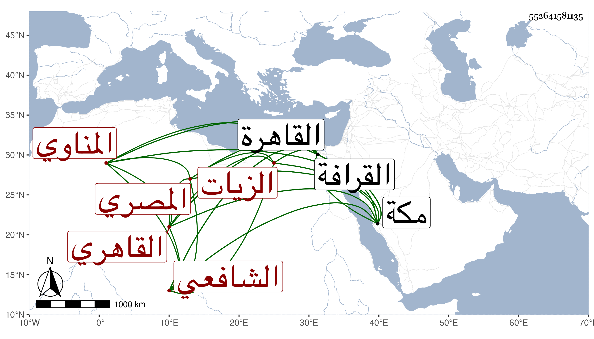

0902Sakhawi.DawLamic.ITO20230111-ara1.EIS1600.552641581135
Biography ID: 552641581135
96
أبو بكر بن صدقة بن علي بن محمد بن عبد الرحمن الزكي بن فتح الدين بن نور الدين أبي الحسن المناوي الأصل المصري القاهري الشافعي الزيات والده ويعرف بالمناوي . ولد سنة خمس وثمانين وسبعمائة أو قبلها بقليل وحفظ القرآن والعمدة والشاطبيتين والمنهاج الفرعي ومختصر ابن الحاجب الأصلي وألفية ابن مالك وعرض في سنة سبع وتسعين على ابن الملقن والأبناسي والغماري والكمال الدميري وخلق أجازوا له وكذا عرض بمكة حين مجاورته فيها مع أبيه سنة ثمانمائة على غير واحد من أعيانهم منهم محمد بن أحمد بن إبرهيم أبو اليمن الطبري والجمال بن ظهيرة وجود القرآن على خليل المشبب وغيره واشتغل في الفقه عند ابن الملقن والدميري والبدر الطنبدي والفارسكوري وفي الأصول عند الشهابين العجيمي والبوصيري وفي العربية عند الشمس الشطنوفي وغيره وسمع على المطرز والعراقي والهيثمي والأبناسي والشرف القدسي وناصر الدين بن الفرات والجوهري في آخرين بالقاهرة وكذا بمكة على ابن ظهيرة وغيره فيما كان يخبر به وهو ثقة فقد كان فيها سنة ثمانمائة وتعانى التجارة ونالته محنة بسبب ولد له انقطع بسببها عن الناس مدة ثم برز ولازم التقي الحصني في شرح مسلم وغيره وحضر دروس الشرف المناوي وحدث سمع منه الفضلاء أخذت عنه قديما وكان خيرا حسن الأدب كثير التواضع والسكون محبا في العزلة والانفراد مكرما للطلبة مع فضيلة في الجملة . مات في رجب سنة ثمانين وصلى عليه بجامع طولون ودفن بالقرافة رحمه الله وإيانا وفي ترجمته من المعجم فوائد .
